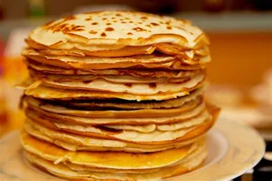

Pannenkoeken

Beschrijving
Pannenkoeken zijn het lekkkerste gerecht voor de hele familie! Je kunt ze eten met spek of kaas, stroop of poedersuiker of gewoon naturel
benodigheden
- 2 eieren
- 250 gram bloem
- 500 ml melk
- zout
stappen
- Meng in een kom de eieren, de bloem, melk en een snufje zout.
- Als alle klontjes zijn verdwenen, kunnen de pannenkoeken gebakken worden.
- Verwarm een beetje boter of margarine in een pan.
- Wacht even totdat de pan goed warm is
- Verdeel dan met een soeplepel wat beslag in het midden van de pan.
- Beweeg de pan een beetje heen en weer zodat het beslag over de hele pan verdeeld is.
- Bak de pannenkoek ongeveer 2-3 minuten totdat de bovenkant droog is.
- Draai de pannenkoek om en bak de pannenkoek nog ongeveer 1-2 minuten op de andere kant.